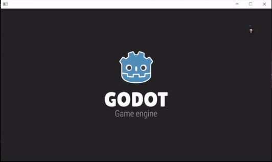
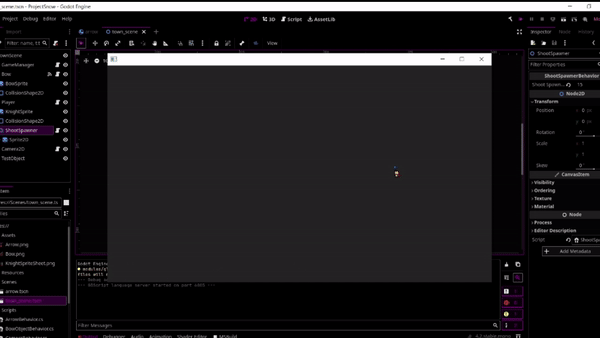
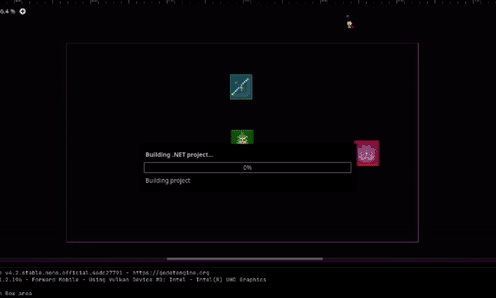

For the past few weeks, I've been implementing a bow and arrow for the player to use. My thought process for this mechanic is the player can use this bow and arrow to complete quests given to them throughout the course of the game. I made a Rigidbody node with a Sprite and Collisionshape Node attached to it. I made that Rigidbody it's own scene instance and made the arrow instantiate itself on the player. Then after making a script for the Arrow object, I made it move forward once placed in the scene in accordance to the players direction.
However, I was running into a problem. Although the arrow did technically work as intended, I noticed the player would shift whenever it was spawned. I think it was because of the collider at the end of the arrow. Which was there to catch any collisions so the arrow could destroy itself upon hitting an object.
So, at first I tried to move the scene instance itself but I realized soon enough that would be too tedious. Instead I created a Node2D and parented it to the player. This Node will function as a spawner where it will offset it's position from the player as they move in accordance to the direction they're facing. Since the player doesn't technically rotate, the spawner does this by getting the player's direction. If the player changes direction it changes it's position to be offset on the X or Y axis in accordance to the direction the player is going.
After I was certain the node was moving in the way I wanted it to, I removed the debug sprite and altered the Shoot method to call a public method in the spawner script. This public method made childed an arrow to the spawner as opposed to the player. There's still an issue where when the player shoots up the arrow comes back down due to gravity. I may make it a static body but I'm not too sure, once I put other collisions into the game it shouldn't be a problem.
Next update will be the creation of items, player inventory, and quests.